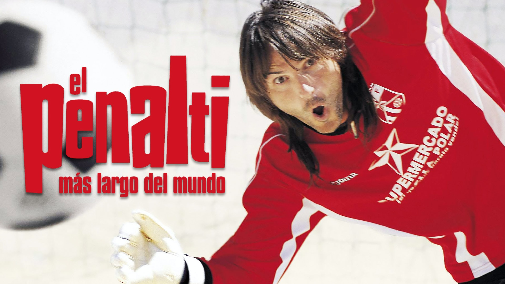

SINOPSIS
Fernando (Fernando Tejero) és el porter suplent d'un equip de Tercera Regional anomenat Estrella
Polar. No ha jugat un sol minut en tota la temporada, però durant l'últim partit de la lliga, en
el
qual el seu equip va guanyant per un gol a zero i es juguen l'ascens a Segona Regional, el
porter
titular es lesiona i
ANY D'ESTRENA
9 de març 2005
DURADA
100 min
GENERE
Comedia
LLOC DE LA NARRACÍO
Madrid